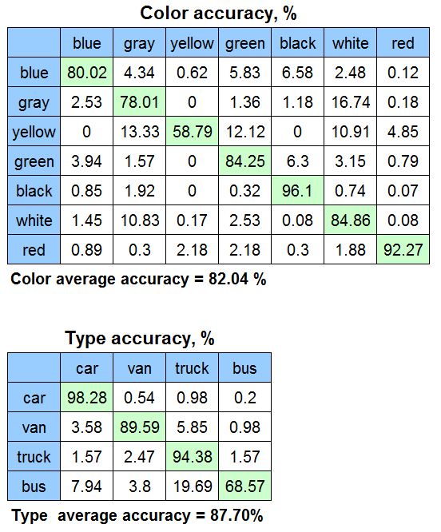

vehicle-attributes-recognition-barrier-0039
Use Case and High-Level Description
This model presents a vehicle attributes classification algorithm for a traffic analysis scenario.
Example

Specification
| Metric | Value |
|---|---|
| Car pose | Front facing cars |
| Occlusion coverage | <50% |
| Min object width | 72 pixels |
| Supported colors | White, gray, yellow, red, green, blue, black |
| Supported types | Car, bus, truck, van |
| GFlops | 0.126 |
| MParams | 0.626 |
| Source framework | Caffe* |
Accuracy - Confusion Matrix

Performance
Link to performance table
Inputs
name: "input" , shape: [1x3x72x72] - An input image in following format [1xCxHxW], where:
- C - number of channels
- H - image height
- W - image width.
Expected color order - BGR.
Outputs
- name: "color", shape: [1, 7, 1, 1] - Softmax output across seven color classes [white, gray, yellow, red, green, blue, black]
- name: "type", shape: [1, 4, 1, 1] - Softmax output across four type classes [car, bus, truck, van]
Legal Information
[*] Other names and brands may be claimed as the property of others.